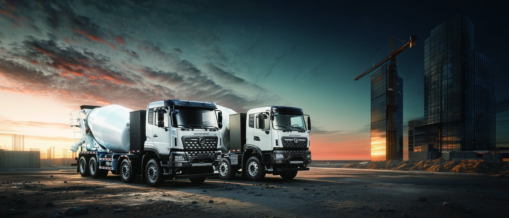

Quick answer: In hot climates an electric truck typically delivers 10 to 25 percent less range than the figure quoted at standard temperature, because cabin air-conditioning and battery cooling draw extra energy and heat slightly lowers cell capacity. A 350 kWh Dongfeng TE8L still covers about 210 to 280 km at full 49-tonne load in 40 to 45 deg C heat, and larger packs such as the 600 kWh TZ3V extend heavy-duty range further. Proper thermal management and smart charging keep the loss at the low end of that range.
Two effects work together in hot weather. First, the traction battery is most efficient near 25 to 35 degrees Celsius; above that, internal resistance rises and usable capacity falls by roughly 1 to 2 percent per extra 5 degrees. Second, the cab air-conditioner and the battery's own cooling loop become major loads. In a 45 deg C desert, a driver running the cab at 24 deg C and the pack cooling at full draws 4 to 9 kW continuously, and over a 280 km shift that is 30 to 55 kWh taken straight from the pack. On a 350 kWh truck that alone is a 9 to 16 percent range penalty before any cell-capacity loss.
The good news is that the loss is predictable. Dongfeng specifies its CATL LFP packs with a liquid thermal loop that holds cell temperature in the safe band, so the penalty stays at the 10 to 25 percent level rather than spiking during a heatwave. Fleets that pre-cool the cab while still on charger, then drive with moderate climate settings, routinely land at the low end of the range.
For hot-climate duty the chemistry choice matters more than raw capacity. LFP (lithium iron phosphate) is far more heat-tolerant than NMC and does not suffer thermal runaway as easily, which is why every Dongfeng export model uses CATL LFP. The thermal management loop adds a small but constant load, and the pack size sets the cushion:
| Model | Battery | Standard range | Hot-climate range (40 to 45 deg C) |
|---|---|---|---|
| TE46 terminal tractor | 282 kWh | 180 to 240 km yard | 150 to 200 km yard |
| TE8L line-haul | 350 kWh | 280 km at 49 t | 210 to 250 km at 49 t |
| TE9L flagship | 425 kWh | 320 km at 49 t | 250 to 290 km at 49 t |
| TZ3V mining | 600 kWh | 8 to 12 mine cycles | 7 to 11 mine cycles |
The table shows the same 10 to 25 percent pattern across the range. A larger pack simply gives more absolute kilometers of cushion, which is why heavy-haul and mining buyers in hot regions step up to the 425 or 600 kWh classes.
Drivers and fleet managers can recover most of the heat penalty with simple discipline. Pre-condition the cab and battery while still plugged in, so the first kilometers spend pack energy on driving rather than cooling a hot cabin. Use moderate cabin setpoints (around 24 to 26 deg C) instead of maximum. Plan routes so the heaviest climbs happen in the cooler morning hours. Keep tires at spec, because under-inflation hurts efficiency more in heat. And schedule DC charging during cooler windows so the pack accepts current faster.
Fleets running the Dongfeng TZ3V electric dump truck in arid mining zones report that disciplined pre-cooling and night charging hold the range loss to about 12 percent even through summer.
Reliability in hot, dusty regions comes down to sealing and cooling. Dongfeng electric trucks use sealed LvKong motors rated 282 to 510 kW and IP67-rated battery enclosures that keep dust and occasional wadi flooding out of the electronics. The LFP cells are inherently stable, and the liquid cooling loop is fed through a filtered radiator that should be cleaned on a regular site schedule. In the electric truck market in Saudi Arabia, operators run 200 to 350 km daily shifts through summer with routine maintenance and no heat-related pack failures across the 8-year warranty period.
Charging strategy is where hot regions win or lose range. DC fast charging heats the pack, so cap sessions at 150 kW with active cooling and avoid charging a fully hot pack to 100 percent in midday sun; an 80 percent target is kinder to the cells and still delivers nearly all usable range. Battery swap changes the game entirely: a 5 to 6 minute swap of a pre-cooled pack lets a desert fleet run 24 hours without heat-delayed charging. For most buyers, a mix of overnight AC charging and one mid-shift DC top-up covers the day while keeping the pack cool.
The bottom line for fleet buyers is reassuring. An electric truck in hot climates loses some range, but with LFP chemistry, liquid thermal management and sensible charging it stays a dependable, lower-cost workhorse. The real-world 210 to 280 km available from a 350 kWh class tractor is enough for the vast majority of corridor, port and urban duty cycles across Africa, the Middle East and Asia.
Heat typically cuts electric truck range by 10 to 25 percent versus standard lab figures. A 350 kWh Dongfeng TE8L rated near 280 km at 49 t GCW delivers about 210 to 250 km in 45 deg C desert operation once cabin and battery cooling loads are included.
Hot-climate electric trucks use liquid-cooled CATL LFP packs held near 25 to 35 deg C by a dedicated thermal loop. Dongfeng models keep the 282 to 600 kWh pack in this band with a 2 to 5 kW cooling draw, protecting both range and the 8-year 4500-cycle warranty.
The Dongfeng TZ3V 600 kWh 8x4 mining dump truck offers the largest pack and the best heat-tolerant range for heavy haul. On a 5 km mine loop it completes 8 to 12 loads per charge even at 45 deg C, while line-haul TE8L and TE9L tractors cover 210 to 280 km at GCW.
Yes, when specified for the duty. Dongfeng electric trucks use sealed LvKong motors rated 282 to 510 kW and IP67 battery enclosures, and LFP chemistry is far more heat-stable than NMC. Field fleets in the Saudi Arabia market run 200 to 350 km daily with routine filtered cooling maintenance.
Charge during cooler early-morning or night windows and cap DC sessions at 150 kW with active pack cooling. A 350 kWh pack reaches 20 to 80 percent in 70 to 90 minutes; battery swap in 5 to 6 minutes supports 24-hour desert operations without heat-delayed charging.
Ready to electrify your fleet? Contact Shaanxi Fenghan Trading — authorized Dongfeng EV truck exporter. WhatsApp: +86 153 1943 1311 | Email: sales@fenghan-trade.com | dongfengevtrucks.com
🌐 Our Network: Fenghan Trade (SAGMOTO/SHACMAN Truck Export) · SAGMOTO heavy duty diesel trucks